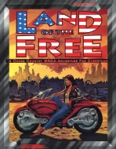

|  | Technical data |
| Scenario for the role-playing game Cyberpunk 2020, published by R. Talsorian Games (1994) | |
| Theme | Transamerica |
| Background quality | 4 / 5 |
| Scenario quality | 4 / 5 |
| Rules quality | - |
| Artworks quality | 2 / 5 |
| Writing quality | 3 / 5 |
This classy scenario is nothing less than a big box, which takes us back to the time of our first RPGs. After opening the box, we find a thick booklet containing the entire campaign, clue sheets (press clippings, documents, etc), business cards (those of the NPCs), a large map of the USA, and sheets representing various vehicles, in order to simulate the action scenes. The content is luxurious, and the campaign is a trip across the USA, which makes the Home of the Brave supplement almost indispensable to play. The scenario starting with an extraction is rather classic and linear, but allows the players to travel, and change from the routine of Night City. All in all, an honest campaign, where you'll learn that NPCs have levels (like in AD&D)... Rather positive despite that.
{kind=link}